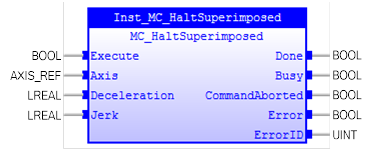
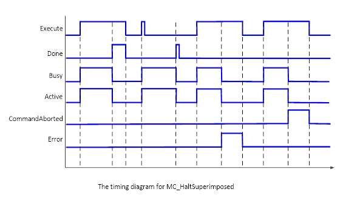
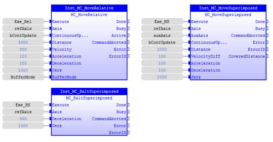
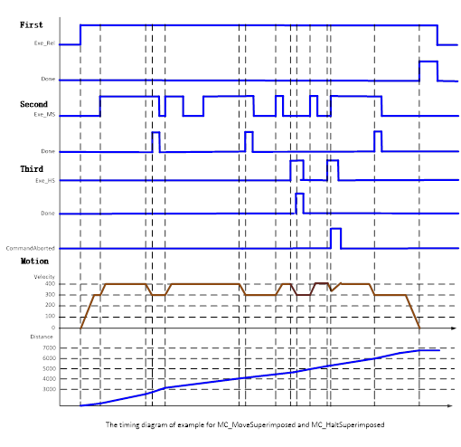

MC_HaltSuperimposed
Commands a halt to all superimposed motions of the axis.

Description:
MC_HaltSuperimposed is used to stop the superimposed motion
of the axis. In non-buffered mode it is possible to set another motion command
during deceleration of the axis, which will abort the MC_HaltSuperimposed and
will be executed immediately.
If this command is active
,
the next command can be issued.
At a rising edge of ‘Execute’, ‘Busy’ is set during
deceleration of the axis. When ‘Error’ or ‘CommandAborted‘ changes to TRUE,
Busy’ is reset.
At a rising edge of ‘Execute’ and ‘Error’ changes to TRUE,
‘Busy’, ‘Done’ and ‘CommandAborted’ cannot be TRUE.
At a rising edge of ‘Execute’, when ‘Done’ changes to TRUE,
‘Busy’ changes to FALSE. If ‘CommandAborted’ changes to TRUE, ‘Done’ changes to
FALSE .
At a falling edge of ‘Execute’, it must be guaranteed that
the corresponding outputs (‘Done’ or ‘Error’) are set for at least one cycle.
The timing diagram is shown a below:

Make sure the input and output parameters are of data type
indicated in the table below.
The underlying motion is not interrupted after it is executed.
Inputs/Outputs:
|
Name
|
Data Type
|
Description
|
|
INPUTS
|
|
Execute
|
BOOL
|
Start the motion at rising edge
|
|
Axis
|
AXIS_REF
|
Reference to the axis
|
|
Deceleration
|
LREAL
|
Value of the deceleration [u/s2]
|
|
Jerk
|
LREAL
|
Value of the Jerk [u/s3]
|
|
OUTPUTS
|
|
Done
|
BOOL
|
Superimposed
motion halted
|
|
Busy
|
BOOL
|
The
FB is not finished and new output values are to be expected
|
|
CommandAborted
|
BOOL
|
‘Command’
is aborted by another command
|
|
Error
|
BOOL
|
Signals
that an error has occurred within the FB
|
|
ErrorID
|
UINT
|
Error
identification
|
Examples:
Example 1:
The following example has three FBs: MC_MoveRelative,
MC_MoveSuperimposed, and MC_HaltSuperimposed. After starting MC_MoveRelative
motion, MC_MoveSuperimposed will be trigged a few times while ‘AXIS’ is
ongoing. MC_HaltSuperimposed will be trigged also while ’AXIS’ is in motion.
|
 Example
Example
|
|
VAR
Inst_MC_MoveRelative :
MC_MoveRelative
;
Inst_MC_MoveSuperimposed :
MC_MoveSuperimposed
;
Inst_MC_HaltSuperimposed : MC_HaltSuperimposed ;
refAxis :
lib:AXIS_REF
;
(*$desc=Axis 0
reference*)
Exe_Rel :
BOOL
:=
FALSE
;
(*$desc=MC_MoveRelative
motion execution control variable*)
bContUpdate :
BOOL
:=
FALSE
;
(*$desc=ContinuousUpdate
function enable variable*)
BufferMode :
MC_BUFFER_MODE
:= mcAborting ;
Exe_MS :
BOOL
:=
FALSE
;
(*$desc=Superimposed
motion execution control variable*)
auxAxis :
lib:AXIS_REF
;
(*$desc=Aux axis for
superimposed motion*)
Exe_HS :
BOOL
:=
FALSE
;
(*$desc=Control
variable for halting superimposed motion*)
END_VAR
|
|

|
The timing diagram for different
situations in the following FBD program is shown below.

See also: